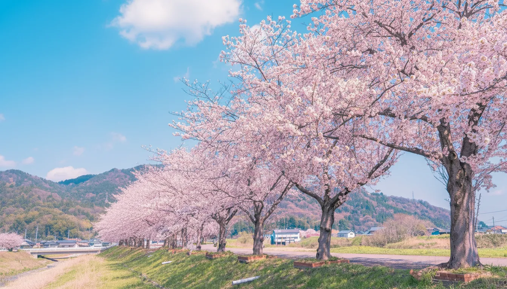
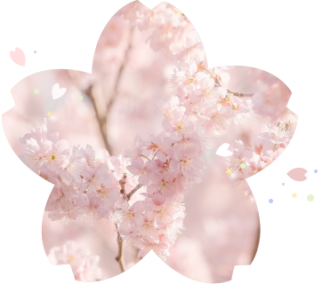
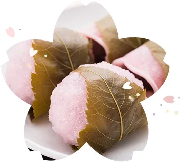
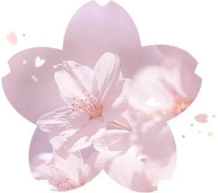
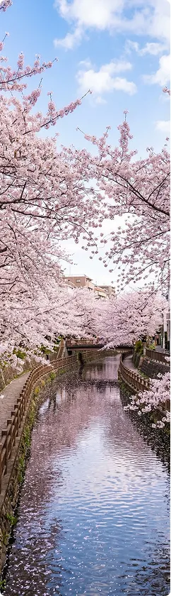
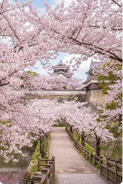

桜は、日本の春を象徴する落葉高木です。
日本で一般的に見られる桜は「ソメイヨシノ」や「ヤマザクラ」などが代表的で、
その数は野生種から園芸品種まで200種類以上にも及びます。
花の色は淡い白から濃い桃色までさまざま。
花びらの形も一重咲き、八重咲きなど多様で、一口に「桜」と言っても、
その表情は実に豊かなのです。

桜の全体的な花言葉は、「精神美」「優美な女性」「純潔」。
満開に咲き、潔く散る桜の姿は、
潔さや品格、節度を重んじる日本人の精神性を象徴しています。
桜が日本の国花とされる理由の一つにはこの「精神美」があります。
また、「優美な女性」「純潔」は、桜が満開のときに見せる
やわらかく気品ある姿、散りゆくときの儚さから生まれたといわれています。
ただ華やかなだけではなく、散る瞬間にさえ美しさを感じさせる花。
その姿は、表面的な装いではなく、芯の通った内面の美しさを思わせます。
ピンクには愛情や思いやりを感じさせ、緊張を和らげ、
優しい気持ちを引き出す効果があると言われています。
桜の淡い色合いは、純粋さを象徴する白が混ざった色とも考えられ、
強すぎないやわらかな印象を与えてくれます。


「桜の香り」として思い浮かべるのは、桜餅や塩漬けの葉の香りでしょう。
その正体はクマリンという成分で、鎮静作用やリラックス効果があるとされています。
桜の葉をすりつぶしたり塩漬けにすることで成分が変化し、あの甘くやさしい香りが生まれます。
桜の花粉には、幸福感をもたらすホルモン「エンドルフィン」
の分泌を促す働きがあると言われています。
また、交感神経を刺激する成分も含まれ、わずかに高揚した状態を生み出すとされています。

私たちが何気なく口にしている「桜」という言葉。
その語源には、いくつかの説がある。
桜の「さ」は田の神様を表し、「くら」は神様が宿る場所、
つまり「御座」を意味すると言われています。
農耕民族であった日本人にとって、
桜は豊作を占う大切な目印でもありました。
花が咲くことは、神様が山から里へ降りてくる合図だったのです。
『古事記』に登場する桜の女神「コノハナサクヤヒメ」
に由来すると言われています。
この中の「サクヤ」から、
「サクラ」になったと考えられている。
桜は神話の中の女神とも結びつく存在なのです。
「咲く」に複数を意味する「ら」を合わせたと言われて
います。
枝いっぱいに小さな花を咲かせるその姿を、
そのまま言葉にしたといわれている。
満開の桜が一斉に咲き誇る様子を思えば、
どこか納得できる響きでもある。
弘前公園
（青森）
幸手権現堂桜堤
（埼玉）
桜は、今この瞬間も
どこかで静かに咲き

目黒川
（東京）
さあ、あなたは今年、どこで桜に会いますか。

舞鶴公園
（福岡県）
清水寺
（京都）
誰かの春を
そっと彩っている